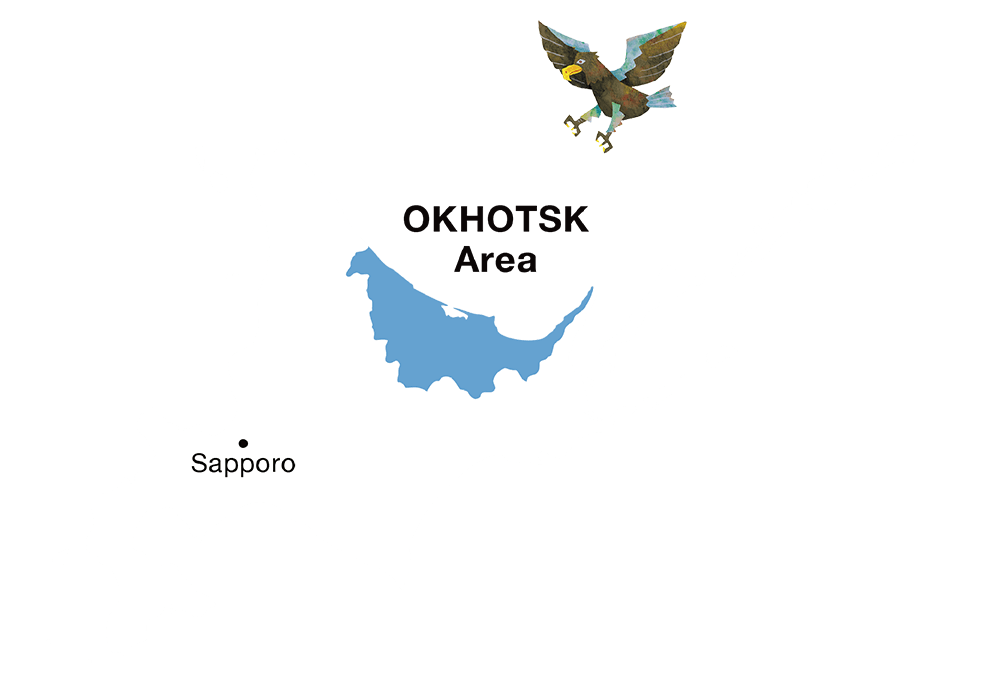

オホーツク サイクリング ガイド
～世界の果てを旅する～

オホーツク紹介
北海道北東部に位置し、管内の経済の中心を担う北見市や、流氷で有名な網走市・紋別市などを含むエリア。冬の寒さは厳しくも、おだやかな気候で日照時間に恵まれているのが特徴です。

Loading...
～世界の果てを旅する～
北海道北東部に位置し、管内の経済の中心を担う北見市や、流氷で有名な網走市・紋別市などを含むエリア。冬の寒さは厳しくも、おだやかな気候で日照時間に恵まれているのが特徴です。